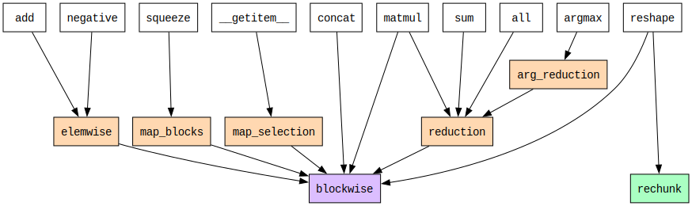
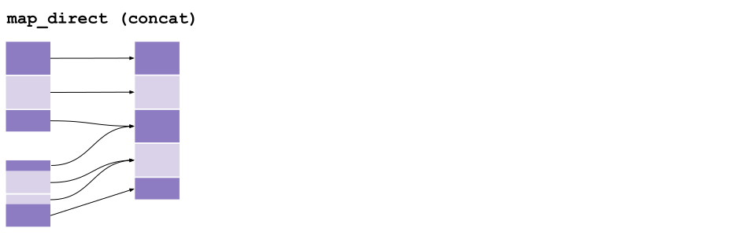
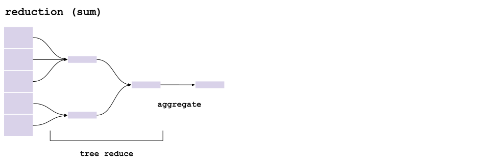

Operations#
Here we look in more depth at the core and primitive operations in Cubed.
Dependency Tree#
The following diagram shows the dependencies between operations. Array API functions are shown at the top (in white), the core operations are in the middle (in orange), and the primitive operations are at the bottom (blockwise in pink and rechunk in green). Not all Array API functions are shown, just a representative selection.

Note how fundamental blockwise is - all array API functions depend on it.
elemwise#
The simplest core operation is elemwise, which maps input array elements to output array elements, a block at a time.
Preserves:
shape,chunks,numblocksMultiple inputs, single output
It is a core operation that is implemented using blockwise.
Here’s an example with two inputs, such as for add. (Arrows are only shown for two input blocks, in order to avoid cluttering the diagram.)

(Note that elemwise supports broadcasting, but that is not shown here.)
map_blocks#
Like elemwise, map_blocks operates on corresponding input blocks, but they need not match in shape, and the output block shape may differ too.
Preserves:
numblocksMultiple inputs, single output
It is a core operation that is implemented using blockwise.
This example shows how the squeeze operation is implemented using map_blocks (with a single input). Note that although the number of blocks is preserved, the shape and chunk size of the output is different to the input since the second dimension is dropped.

map_direct#
The map_direct operation is more general than map_blocks since it allows input arrays to be read directly, without regard for block boundaries.
No input array attributes are preserved in general
Multiple inputs, single output
It is a core operation that is implemented using map_blocks, which is in turn implemented using blockwise. It works by creating an empty array that has the same shape and chunk structure as the output, and calling map_blocks on this empty array, passing in the input arrays as side inputs to the function, which may access them in whatever way is needed.
This example shows how concat is implemented using map_direct. Each block in the output array is read directly from one or more blocks from the inputs.

blockwise#
The blockwise operation is a primitive operation that operates on input array blocks, while allowing an input block to be sent to multiple output blocks.
No input array attributes are preserved in general
Multiple inputs, single output
This example shows how outer is implemented using blockwise. Each block from the input is sent to three blocks in the output. (Arrows are only shown for two input blocks, in order to avoid cluttering the diagram.)

rechunk#
The rechunk operation is a primitive operation for changing the chunking of an array, without changing its shape or dtype.
Preserves:
shape,dtypeSingle input, single output
This example shows how there is no one-to-one correspondence between blocks in the input and output. In general, an output block is composed of parts of many input blocks. Consult this page on the rechunker algorithm for details of how it is implemented.

reduction and arg_reduction#
The reduction operation reduces an array along one or more axes.
No input array attributes are preserved in general
Single input, single output
It is a core operation that is implemented using a blockwise operation called partial_reduce that reads multiple blocks and performs the reduction operation on them.
The partial_reduce operations are arranged in a tree (tree_reduce) with multiple rounds until there’s a single block in each reduction axis. Finally an aggregrate blockwise operation is applied to the results.
Here is an example of reducing over the first axis, with two rounds of partial_reduce operations:

The arg_reduction works similarly, but uses different functions to return indexes rather than values.